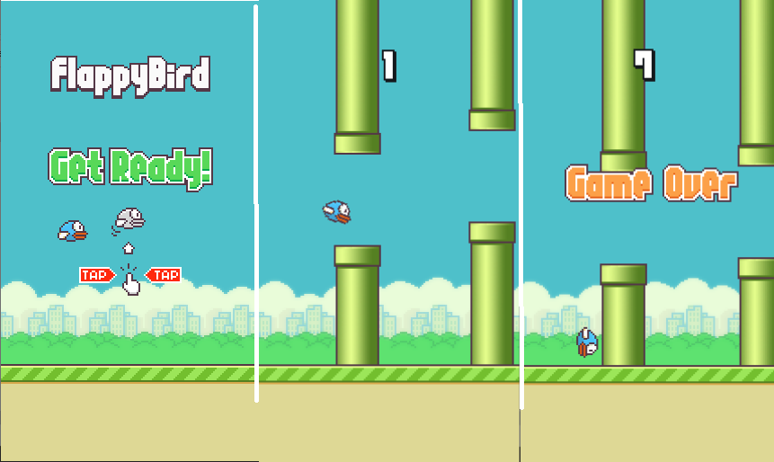

程序简介：像素鸟（flappy bird）由一位来自越南河内的独立游戏开发者阮哈东开发，是一款形式简易但难度极高的休闲游戏。简单但不粗糙的8比特像素画面、超级玛丽游戏中的绿色通道、眼神有点呆滞的小鸟和几朵白云便构成了游戏的一切。你需要不断控制按动空格的频率来调节小鸟的飞行高度和降落速度，让小鸟顺利地通过画面右端的通道，如果你不小心擦碰到了通道的话，游戏便宣告结束。2014年2月，《Flappy Bird》被开发者本人从苹果及谷歌应用商店撤下。此程序由DaYe个人根据原版仿制而成，仅供学习使用，请勿用于违法或商业用途。点击此处下载FlappyBird(Windows x64)
下载FlappyBird
效果图: